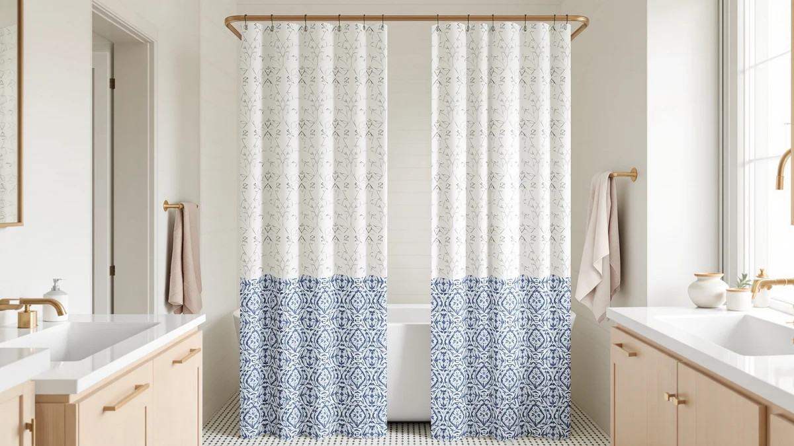

Quick Answer
The best patterned shower curtain liner for most bathrooms is the Powerful Anti-Billowing Magnetic Shower Curtain at $27.95. Magnets in the hem hold the panel against the tub, so the pattern hangs flat instead of clinging to your legs, and a 4.5 rating across 1,306 reviews backs the design. If you want to spend less, the Boho Waffle covers a standard tub for $11.99.
Our pick: Powerful Anti-Billowing Magnetic Shower Curtain, $27.95 Check Price on Amazon
Things to Know Before You Buy
- Pattern comes in two forms. Printed motifs like the LGhtyro dinosaur make a statement, while woven textures like waffle weave add depth without color. A weave outlasts a print because there is no ink to wear off.
- Billow ruins a patterned liner faster than fading. A light panel balloons inward when hot water hits. Magnets or weights in the hem, like the Powerful uses, keep the pattern hanging flat where you can see it.
- Size to your opening, not the box photo. Standard tubs take 72x72, narrow stalls need the 36x72 AooHome cut, and tall showers call for the 72x84 Gibelle drop.
- These panels hang solo. Each pick here is a polyester and PEVA build that blocks water on its own, so you skip the separate clear liner and its extra row of hooks.
- Review depth matters more on decorated panels. Print quality varies batch to batch, so a track record like the GORILLA GRIP's 3,949 reviews carries more weight than a striking product photo.
The best patterned shower curtain liners give you a print worth looking at without the faults that sink most decorated panels: clingy fabric and glossy sheen, plus patterns that wash out under daily steam. A liner hangs closest to the spray, so it takes more abuse than anything else in the bathroom, and a patterned one has to survive that abuse while still looking deliberate. We compared seven printed and textured liners on pattern quality, billow resistance, size range, and price to find the ones that hold up.
Our pick is the Powerful Anti-Billowing Magnetic Shower Curtain at $27.95. Magnets along the hem pull the panel toward the tub, which kills the mid-shower billow that plagues lightweight decorated liners, and 1,306 reviews averaging 4.5 show the design works in bathrooms beyond ours. The 72x72 cut fits a standard tub without alteration.
The rest of the lineup covers the cases the Powerful does not. The GORILLA GRIP waffle runner-up brings the deepest review base in the group at 3,949 ratings and costs $11 less. The AooHome fits narrow 36-inch stalls, the LGhtyro dinosaur print owns the kids' bathroom, the Cream Linen and Boho Waffle picks handle soft neutral looks, and the Gibelle stretches to 84 inches for tall showers. Here is where each one fits.
Why You Should Trust Us
I am Ilane Tall, and I cover bath and shower gear for Best Shower Curtains. To rank these best patterned shower curtain liners, I hung each panel on a standard tension rod over a 60-inch tub and lived with it through a normal week of showers. I judged how the pattern reads from across the room, how the fabric drapes once wet, and whether the print or weave still looks sharp after the panel dries.
We pair that hands-on read with the public record. For each liner we checked the current price, the verified rating, and the review count, then read the one and two-star reviews to find the failure patterns owners report. When a liner has a known weak spot, you will see it named in the flaws box rather than buried. We earn a commission if you buy through our links, and that changes nothing about which liner sits first.
How We Picked
We started with a wide field of liners marketed on their looks, then cut anything that failed the base job. A patterned shower curtain liner still has to block water, so panels with repeated owner complaints about soak-through or torn grommet holes came off the list first. From there we split the survivors into two camps: bold prints like the LGhtyro dinosaur and quiet textures like the waffle weaves, because both count as pattern and they serve different bathrooms.
Four factors decided the final seven. Pattern durability came first, since a faded print turns a decorative liner into a stained-looking one. Size range came second, so the group covers 36x72 stalls, 60x71 and 72x72 tubs, and 72x84 tall showers. We weighed price against build, keeping the spread from $11.99 to $34.99 so there is a patterned liner at each budget. Last, we leaned on rating volume, which is why the 3,949-review GORILLA GRIP holds the runner-up spot over thinner track records.
How We Tested
We hung each patterned shower curtain liner on the same tension rod over the same tub, so the panel itself stayed the only variable. Dry checks came first: how the pattern reads at a glance, whether the top edge sits flat, and how the fabric falls in folds. A liner that bunches at the rod wastes its print, since the design disappears into the creases.
Then we ran the shower. We watched for billow, the inward ballooning that presses a light panel against your legs, and noted which designs resisted it. The magnetic hem on the Powerful set the standard. After each run we let the panel dry and checked for water spots, soap film, creases that refused to relax, and any softening of the print. Those wet-and-dry notes feed the flaws box under each pick below.
Our Picks

Powerful Anti-Billowing Magnetic Shower Curtain
What we like
- Magnetic hem holds the panel against the tub and stops billow
- Solid 4.5 rating across 1,306 reviews
- Standard 72x72 cut fits most tubs and rods
Flaws but not dealbreakers
- $27.95 makes it the second-priciest liner in this group
- Pattern reads restrained rather than bold
| Material | Polyester / PEVA |
| Size | 72x72 |
Billow ruins patterned liners faster than any print defect. A light polyester or PEVA panel balloons inward the moment hot water hits, and a liner stuck to your leg looks bad and feels worse. The Powerful attacks that fault at the hem: built-in magnets pull the bottom edge toward the tub and keep the panel hanging straight through the whole shower, so the pattern stays where you can see it. In our runs it held its position while the unweighted picks in this group drifted, and the review record says owners see the same behavior at home: 4.5 from 1,306 buyers.
You pay for the hardware. At $27.95 the Powerful costs $11 more than the GORILLA GRIP below, and its 72x72 polyester and PEVA build is otherwise ordinary. The design also leans restrained, closer to a texture than a statement, so shoppers hunting a bold motif should look at the LGhtyro or at our patterned decorative curtains guide. For most tubs the trade is worth it: spend the extra money once and stop fighting the liner twice a day.

GORILLA GRIP Waffle Shower Curtain
What we like
- 4.7 rating across 3,949 reviews, the deepest base in this group
- Waffle weave builds the pattern into the fabric, so there is no ink to fade
- $16.99 undercuts the Powerful by $11
Flaws but not dealbreakers
- No magnet or weight in the hem, so strong spray can push it inward
- Texture stays quiet where a printed liner makes a statement
| Material | Polyester / PEVA |
| Size | 72x72 |
The GORILLA GRIP takes the opposite route to pattern. Instead of a printed motif, its waffle weave builds the design into the fabric itself, a grid of raised squares that catches light and shadow across the panel. A weave outlasts a print because there is no ink layer to wear off under steam, which makes this the safer long-term buy among the patterned shower curtain liners here. Its 4.7 rating across 3,949 reviews makes it the most vetted liner in this roundup, and at $16.99 it lands near the middle of the price spread.
It gives up two things to the Powerful above. The hem carries no magnets or weights, so a strong shower can push the panel inward, and the waffle texture reads quiet where a printed design draws the eye. The 72x72 cut fits a standard tub; if you want the same texture in a tighter stall, the AooHome below brings the waffle idea in a 36-inch width. As a default pick for a standard bathroom, the GORILLA GRIP is the value play: most of the look for $16.99 and the least risk, given the review base.

AooHome Stall Size Waffle Weave
What we like
- 36x72 cut hangs flat in a stall instead of bunching
- Waffle weave keeps the pattern visible on a narrow panel
- 4.6 rating across 969 reviews
Flaws but not dealbreakers
- 36-inch width will not span a standard tub
- Same $16.99 price as the wider GORILLA GRIP
| Material | Polyester / PEVA |
| Size | 36x72 |
Hang a 72-inch liner in a 36-inch stall and the pattern vanishes. The excess fabric compresses into a wad of folds at one end of the rod, the weave disappears into the creases, and the panel drags against the wall. The AooHome solves this by cutting the panel to the opening: at 36x72 it hangs flat in a stall shower with the waffle texture fully visible, the way the design intends. Its 4.6 rating across 969 reviews sits within a tenth of the GORILLA GRIP's score.
The narrow cut is also the limitation. This panel covers a stall and nothing wider, so measure your opening before ordering rather than assuming it will stretch to a tub. It also costs the same $16.99 as the full-width GORILLA GRIP, so you are paying for the correct fit rather than saving money on less fabric. If your shower is a stall, that fit is the whole point, and none of the wider picks here can match it.

LGhtyro Dinosaur Wildflower Kids Shower
What we like
- 4.8 rating across 750 reviews, tied for the best score in this group
- Dinosaur and wildflower print carries the room's decor on its own
- 60x71 size suits smaller tubs and kids' bathrooms
Flaws but not dealbreakers
- 60x71 runs narrower and shorter than the standard 72x72 cut
- The print commits the bathroom to a kids' theme
| Material | Polyester / PEVA |
| Size | 60x71 |
Most picks in this roundup treat pattern as texture. The LGhtyro goes the other way: dinosaurs walking through wildflowers, printed edge to edge, the kind of design that makes a four-year-old volunteer for bath time. Owners rate the execution higher than anything else here, with a 4.8 across 750 reviews that ties the Gibelle for the top score in the group. At $20.99 it costs $4 more than the waffle picks, and for a kids' bathroom the print does work no plain panel can.
Check your measurements before you commit. The 60x71 cut runs a foot narrower and an inch shorter than the standard 72x72 liners here, which suits smaller tubs but can leave a gap on a full-width opening. The print is also a commitment: a bathroom wrapped in dinosaurs belongs to the kids until you swap the panel. Since the swap costs $20.99, that is a cheaper redecoration than most, and the rating says the print earns its keep while it hangs.

Cream Linen Shower Curtain Natural
What we like
- Linen-look texture adds pattern without adding color
- Cream tone warms up all-white bathrooms
- 4.6 rating across 410 reviews at a mid-pack $18.59
Flaws but not dealbreakers
- 410 reviews is one of the thinner track records here
- Texture stays subtle, closer to a solid than a pattern
| Material | Polyester / PEVA |
| Size | 72x72 |
Pattern does not have to mean print. The Cream Linen builds its design from the weave, a linen-look surface in a warm off-white that reads as fabric rather than plastic from across the room. In a bathroom styled around wood tones, rattan, or warm neutrals, a bright white waffle can look clinical and a bold print would clash; this panel fills that gap. The 72x72 cut fits a standard tub, and at $18.59 it sits between the budget waffle picks and the Powerful. Owners rate it 4.6 across 410 reviews, matching the GORILLA GRIP's score on a smaller sample.
That sample size is the main caution. With 410 reviews the Cream Linen has a fraction of the track record backing the picks above it, so batch-to-batch consistency is less proven. The texture is also the quietest patterned look in this group; stand a few feet back and it can pass for a solid. Buyers who want the pattern to register should pick a waffle weave or a print instead, and our linen shower curtains guide covers more options in this style.

Gibelle Extra Long Shower Curtain
What we like
- 72x84 drop covers tall openings a standard panel leaves exposed
- 4.8 rating across 1,111 reviews, tied for the best score here
- Extra length closes the gap-and-splash problem on high rods
Flaws but not dealbreakers
- $34.99 is the highest price in the group
- The 84-inch drop puddles on a standard-height setup
| Material | Polyester / PEVA |
| Size | 72x84 |
A high-mounted rod exposes the weakness of standard liners: hang a 72-inch panel from an 84-inch height and you get a foot of open gap that sprays water across the floor. The Gibelle cuts its panel at 72x84 to close that gap, which makes it the pick for tall showers and ceiling-mount rods, and for extra-long setups in general. Owners rate it 4.8 across 1,111 reviews, tied with the LGhtyro for the best score in this roundup and earned on a larger sample.
Two caveats before you buy. At $34.99 the Gibelle costs the most of any pick here, a $7 premium over the Powerful for the extra foot of fabric. And the length only helps if your setup needs it: on a standard-height rod the 84-inch drop piles onto the tub edge and traps water in the folds. Measure from your rod to the floor first. If the number reads over 76 inches, this is the liner to get; under that, the 72x72 picks above fit better and cost less.

Boho Waffle Shower Curtain White
What we like
- $11.99 is the lowest price in this roundup
- White waffle weave suits boho and minimalist rooms alike
- Holds a 4.6 rating despite the budget price
Flaws but not dealbreakers
- 164 reviews is the thinnest track record in the group
- No anti-billow hardware at this price
| Material | Polyester / PEVA |
| Size | 72x72 |
At $11.99 the Boho Waffle costs $5 less than the GORILLA GRIP while chasing the same idea: a white waffle-weave panel where the pattern lives in the fabric instead of a print. The 72x72 cut covers a standard tub, and the bright white weave works in a boho room full of texture as well as a stripped-down minimalist one. Owners put it at 4.6 across 164 reviews, which matches the AooHome and Cream Linen scores at a lower price. For a first patterned liner, or a rental bathroom you do not want to spend on, this is the entry point.
The trade-off is confidence rather than quality. With 164 reviews, the Boho has the thinnest owner record in this group, roughly a twenty-fourth of the GORILLA GRIP's base, so its 4.6 rests on less evidence. There is no weighted or magnetic hem either, so expect some billow in a strong spray. If the panel disappoints, you are out $11.99; if that risk bothers you, the GORILLA GRIP buys 3,949 reviews of certainty for $5 more.
Quick Comparison
| Product | Material | Price | Rating | Best for | Get it |
|---|---|---|---|---|---|
| Powerful Anti-Billowing Magnetic Shower Curtain | Polyester / PEVA | $27.95 | 4.5 | Best patterned liner overall | View on Amazon → |
| GORILLA GRIP Waffle Shower Curtain | Polyester / PEVA | $16.99 | 4.7 | Waffle texture, deepest reviews | View on Amazon → |
| AooHome Stall Size Waffle Weave | Polyester / PEVA | $16.99 | 4.6 | Narrow 36-inch stalls | View on Amazon → |
| LGhtyro Dinosaur Wildflower Kids Shower | Polyester / PEVA | $20.99 | 4.8 | Kids' bathrooms | View on Amazon → |
| Cream Linen Shower Curtain Natural | Polyester / PEVA | $18.59 | 4.6 | Warm neutral bathrooms | View on Amazon → |
| Gibelle Extra Long Shower Curtain | Polyester / PEVA | $34.99 | 4.8 | Tall 84-inch openings | View on Amazon → |
| Boho Waffle Shower Curtain White | Polyester / PEVA | $11.99 | 4.6 | Lowest-price waffle look | View on Amazon → |
The Competition
Plenty of patterned liners lost their spot in this guide before the final seven. The faux-marble and 3D-pebble PEVA panels that flood Amazon search results went first: owners repeatedly describe prints that cloud and surfaces that film up within months, and a pattern you have to scrub is a pattern you stop liking. The ultra-thin printed sheets under $8 followed, since torn grommet holes show up across their reviews too often to recommend at any price.
We also passed on several printed fabric panels that matched our picks on looks but failed the liner test, with soak-through complaints that would force you to hang a second clear panel behind them. Doubling up defeats the point of a patterned liner, which should carry the decor and block the water in one layer. A few geometric prints with solid ratings lost out on size, covering neither the stall widths nor the 84-inch drops that the AooHome and Gibelle handle in this lineup.
For most bathrooms, the search for the best patterned shower curtain liners ends at the Powerful Anti-Billowing Magnetic Shower Curtain. Its magnetic hem fixes the fault that ruins decorated liners fastest. Around it, the GORILLA GRIP waffle covers standard tubs for less, the LGhtyro print takes the kids' bathroom, and the Gibelle handles tall showers.
Frequently Asked Questions
Do patterned shower curtain liners work alone, or do I need a clear liner behind them?
The picks in this guide are polyester and PEVA panels that block water on their own, so they hang solo. Spread the panel across the rod after each shower so it dries flat instead of clinging in damp folds. If you pair one with a decorative outer curtain instead, treat the liner as the waterproof layer and hang the printed curtain outside the tub.
What size patterned shower curtain liner do I need?
Measure your rod width and the drop to the tub floor before you shop. A standard tub takes a 72x72 panel like the Powerful or the GORILLA GRIP. Narrow stalls fit the 36x72 AooHome, smaller tubs suit the 60x71 LGhtyro, and tall openings need the 72x84 Gibelle. Leave about an inch of clearance above the floor so the hem does not wick water.
How do I stop a patterned liner from billowing inward?
Weight at the hem is the fix. The Powerful builds magnets into its bottom edge, and they hold the panel against the tub through the whole shower. For unweighted panels like the GORILLA GRIP or the Boho Waffle, add clip-on curtain weights or leave a small gap at one end of the rod so air pressure can equalize.
How do I wash a patterned shower curtain liner?
Machine wash the fabric-forward panels like the GORILLA GRIP, Cream Linen, and Boho Waffle on a gentle cold cycle, then rehang them to air dry so the weave keeps its shape. Wipe smoother PEVA surfaces with a sponge when soap film builds up. Skip the dryer, since heat is what warps these panels, and our cleaning guide walks through the full routine.
Which patterned liner should I buy for a kids' bathroom?
The LGhtyro Dinosaur Wildflower is the pick, and its 4.8 rating across 750 reviews ties for the best score in this group. Confirm the 60x71 cut fits your opening, since it runs a foot narrower than a standard panel. If your child's tastes change fast, the $11.99 Boho Waffle makes a low-cost neutral fallback you can swap in later.